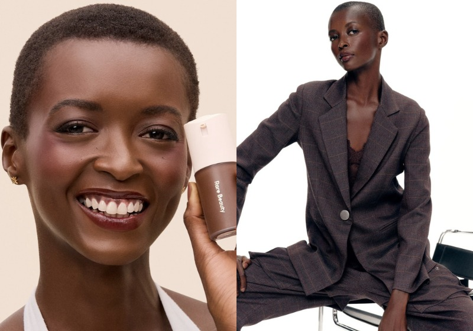

Do Maranhão para o mundo.
26 de maio de 2026

Do Maranhão para o mundo. Essa brasileira, que saiu de São Luís, conquistou uma campanha global da Rare Beauty, marca criada pela cantora Selena Gomez. A jovem modelo Amira Pinheiro, de 23 anos, é a única brasileira escolhida para participar do novo projeto internacional da empresa.
A jovem modelo Amira Pinheiro, de 23 anos, é a única brasileira escolhida para participar do novo projeto internacional da empresa.
Antes de desfilar para marcas famosas e viajar o mundo, Amira teve uma rotina bem diferente. A modelo trabalhou como recepcionista e também vendeu chips de celular para ajudar a conquistar a independência financeira.
A trajetória da maranhense começou longe dos holofotes. Natural de São Luís, ela precisou enfrentar dificuldades antes de conquistar espaço no mercado internacional da moda.
No Brasil, Amira ganhou destaque após bater um recorde na São Paulo Fashion Week.
Ela participou de 22 desfiles em uma única edição do evento.
Hoje, a maranhense coleciona campanhas para gigantes da moda como Balmain, Armani, Tiffany & Co., Max Mara e Tom Ford.
Mesmo vivendo o sonho internacional, ela faz questão de carregar as próprias raízes por onde passa.
A campanha da Rare Beauty foi fotografada em Los Angeles, nos Estados Unidos, e reúne mulheres de diferentes origens e tons de pele para representar diversidade e inclusão.
Criada por Selena Gomez, a Rare Beauty se tornou uma das marcas de maquiagem mais famosas do mundo justamente por defender autoestima, autenticidade e saúde mental.
Para Amira, participar da campanha foi muito mais do que um trabalho de moda. A modelo contou que representar mulheres brasileiras e latinas em uma campanha global tem um significado enorme.
“Fala sobre pertencimento, identidade e abrir caminhos para que mais histórias possam ser vistas”, disse a jovem sobre a experiência internacional.
Amira também conheceu Selena Gomez durante as gravações. Segundo ela, a cantora foi carinhosa, atenciosa e fez questão de ouvir a história de cada mulher presente no projeto.
Nas redes sociais, a história da modelo emocionou brasileiros. Muitas pessoas celebraram a conquista da jovem e destacaram a importância da representatividade em campanhas internacionais.
Hoje, Amira Pinheiro representa muito mais do que beleza. A jovem maranhense virou símbolo de superação, autoestima e da força de quem nunca desistiu dos próprios sonhos.